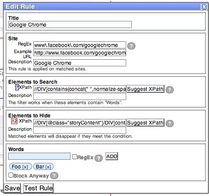
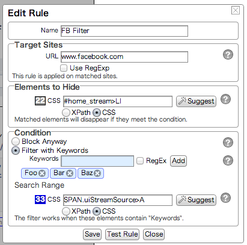

What's New in CustomBlocker 2.4
Simplified Interfaces
The user interfaces of CustomBlocker 2.3.x was too complicated. We simplified them by removing some rarely used fields and restructuring the form.
| Old | New |
|  |  |
Wildcards
Previous versions of CustomBlocker used regular expressions for URL matching. Regular expressions are hard to read for people other than programmers and computer geeks. Now, you can use wildcards to specify URLs.
- Regular Expression
- https:\/\/twitter\.com\/.*\/following
- Wildcard
- https://twitter.com/*/following
"Search Range" is Optional
Previous versions requires fields named "Elements to Hide" and "Search Range" when you create a rule. The latter field is now optional. If "Search Range" is empty, CustomBlocker will search for keywords from whole elements specified with "Elements to Hide"."
Future Plans
Cloud Sync
CustomBlocker has "Import" and "Export" features so that you can share rules and words on multiple devices. However, it's a bit bothersome to export and import rules frequently. We are now planning to add a new feature of cloud sync. With this feature, rules can be automatically synchronized on multiple devices.